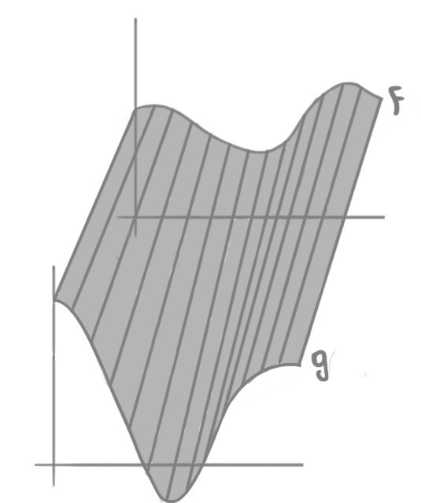
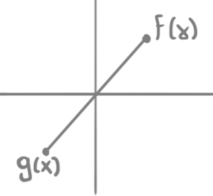

Homotopia e Extensões Contínuas
Aplicações Homotópicas
Sejam $X, Y$ espaços topológicos e $f,g \colon X \to Y$ duas aplicações contínuas. Dizemos que $f$ e $g$ são homotópicas ou homotopicamente equivalentes se, e somente se, existe outra aplicação contínua $H \colon X \times [0,1] \to Y$ tal que $H(x,0) = f(x)$ e $H(x,1) = g(x)$ para todo $x$. Nesse caso, escrevemos $f \simeq g$ e chamamos $H$ de uma homotopia entre $f$ e $g$.
Exemplo 01: se $E$ é um espaço vetorial normado e $f,g \colon X \to E$ são duas aplicações contínuas, então $f$ e $g$ são homotópicas: podemos considerar a homotopia $H(x,t) = (1-t)f(x) + tg(x)$. Esse tipo de homotopia é chamada de homotopia linear.
Homotopia entre duas funções $f,g \colon \mathbb{R} \to \mathbb{R}$.
Observação 02: a relação de homotopia depende do contradomínio. Por exemplo, duas aplicações $f,g \colon X \to E \setminus \{0\}$ podem não ser homotópicas. Em particular, se dado $x_0 \in X$, $E = \mathbb{R}^2$ e $f(x_0)$ e $g(x_0)$ forem opostos pela origem, então a homotopia linear é impossível, pois teríamos $H(x_0,1/2) = 0$.
Exemplo citado na observação.
Exemplo 03: se representarmos por $\mathbb{S}^n$ a esfera $n-$dimensional (note que $\mathbb{S}^n \subset \mathbb{R}^{n+1}$), dadas $f,g \colon X \to \mathbb{S}^n$ não antipodais, ou seja, tais que $f(x) \neq -g(x)$ para todo $x \in X$, então $f \simeq g$ pela aplicação $H \colon X \times [0,1] \to \mathbb{S}^n$ dada por: $$H(x,t) = \frac{(1-t)f(x) + tg(x)}{\mid (1-t)f(x) + tg(x) \mid}.$$ A intuição por trás dessa homotopia é a seguinte: dado $x_0 \in X$, $G_{x_0}(t) = (1-t)f(x_0) + tg(x_0)$ é o segmento de reta que liga os pontos $f(x_0)$ e $g(x_0)$. Dividir por $\mid G_{x_0}(t) \mid$ é a mesma coisa que projetar esse segmento na esfera, pois $H(x_0, t)$ acaba tendo norma $1$ para todo $t$.
Projeção do ponto $a$ do segmento que liga $f(x_0)$ em $g(x_0)$ na esfera de $1-$dimensão.
Exemplo 04: agora, vamos olhar dois casos particulares do exemplo anterior:
- se $f(x) \neq x$ para todo $x \in X$, então podemos escolher $g(x) = -x$ e assim teremos que $f \simeq g = -Id_X$;
- se $f(x) \neq -x$ para todo $x \in X$, então podemos escolher $g(x) = x$ e assim teremos que $f \simeq g = Id_X$;
Exemplo 05: ao longo do curso, veremos que a aplicação antipodal $\alpha \colon \mathbb{S}^n \to \mathbb{S}^n$ dada por $\alpha(x) = -x$ é homotópica à identidade se, e somente se, $n$ é ímpar.
Homotopias e Relações de Equivalência
Proposição 06: a relação $\simeq$ é uma relação de equivalência:
Demonstração:
- Reflexiva: considere a homotopia $H(x,t) = f(x)$. Se o objetivo é transformar uma coisa nela mesma, podemos simplesmente não fazer nada;
- Simétrica: se $H(x,t)$ é homotopia de $f$ a $g$, então $K(x,t) = H(x,1-t)$ é homotopia de $g$ a $f$. A intuição aqui é que estamos utilizando a mesma transformação, mas ao contrário;
- Transitiva: se $H(x,t)$ é homotopia de $f$ a $g$ e $K(x,t)$ é homotopia de $g$ a $h$, então: $$L(x,t) = \left\{ \begin{array}{ll} H(x,2t) & \mbox{se } 0 \leq x \leq 1/2 \\ K(x,2t-1) & \mbox{se } 1/2 \leq x \leq 1 \end{array} \right.$$ Aqui a ideia é que estamos utilizando metade do tempo para transformar $f$ em $g$ e a outra metade para transformar $g$ em $h$. Como para $t = 1/2$ ambas as partes da definição coincidem, a homotopia é contínua. $\blacksquare$
Ser homotopicamente equivalente é uma relação de equivalência.
Perceba que na imagem acima, para facilitar a vida do desenhista (eu mesmo), representamos a homotopia para um ponto $x_0 \in X$ fixado, não para todo o domínio $X$ de $f$ e $g$.
Proposição 07: se $f, f' \colon X \to Y$ são homotópicas e $g, g' \colon Y \to Z$ também são, então $g \circ f, g' \circ f' \colon X \to Z$ são homotópicas.
Demonstração: sejam $H, K$ homotopias entre $f, f'$ e $g,g'$, respectivamente. A função $J \colon X \times [0,1] \to Z$ dada por $J(x,t) = K(H(x,t),t)$ é uma homotopia de $g \circ f$ para $g' \circ f'$. Como $K$ e $H$ são contínuas, $J$ é contínua e além disso temos $J(x,0) = K(H(x,0),0) = K(f(x),0) = g(f(x))$ e $J(x,1) = K(H(x,1),1) = K(f'(x),1) = g'(f'(x))$. Assim, $J$ é de fato uma homotopia entre as duas funções. $\blacksquare$
Dada $f \colon X \to Y$ contínua, definimos a classe de homotopia $[f]$ de $f$ como sendo o conjunto $\{g \colon f \simeq g\}$. A proposição acima apenas garante que a operação $[g] \circ [f] = [g \circ f]$ está bem definida.
Tipo de Homotopia
Dizemos que $f \colon X \to Y$ contínua é uma equivalência homotópica se existe $g \colon Y \to X$ também contínua tal que $g \circ f \simeq Id_X$ e $f \circ g \simeq Id_Y$. Dizemos que $g$ é a inversa homotópica de $f$. Diremos que $X$ e $Y$ tem o mesmo tipo de homotopia.
Exemplo 08: todo homeomorfismo é equivalência homotópica.
Exemplo 09: todo espaço vetorial normado tem o tipo de homotopia de um ponto, pois dado um EVN $E$, note que $f \colon E \to \{0\}$ dada por $f(v) = 0$ para todo $v \in E$ é contínua, pois é constante. Ainda mais, se $i \colon \{0\} \to E$ é a inclusão, note que $f \circ i \simeq Id_{\{0\}}$ () e $i \circ f \simeq Id_E$ (quaisquer duas funções contínuas com contra-domínio num EVN são homotópicas).
Exemplo 10: considere a inclusão $i \colon \mathbb{S}^n \to \mathbb{R}^{n+1}\setminus\{0\}$ e a função $r \colon \mathbb{R}^{n+1}\setminus\{0\} \to \mathbb{S}^n$ dada por $r(x) = x/|x|$. Primeiro, note que ambas $i$ e $r$ são contínuas. Agora, claramente $r \circ i = Id_{\mathbb{S}^n}$ e, além disso, pela homotopia linear segue também que $i \circ r \simeq Id_{\mathbb{R}^{n+1}}$. Assim, $\mathbb{R}^{n+1}\setminus\{0\}$ e $\mathbb{S}^n$ tem o mesmo tipo de homotopia. A ideia aqui é que para cada $x \in \mathbb{R}^{n+1}$ podemos percorrer o a reta que liga $x$ em $0$ até chegarmos em $\mathbb{S}^n$ (o que não aconteceria no caso de incluirmos o $0$ pois essa reta não estaria bem definida).

Note que homotopia é um conceito muito mais fraco que homeomorfismo entre espaços topológicos. Por exemplo, como $\mathbb{R}^{n+1}$ é um EVN, temos que $\mathbb{S}^n$ tem o tipo de homotopia de um ponto. Porém, perceba que $\mathbb{S}^n$ separa o espaço em dois subespaços desconexos, enquanto um ponto não faz isso.
Homotopia de Pares
Um par de espaços topológicos é uma dupla $(X,A)$ onde $A$ é subespaço de $X$. Uma aplicação contínua de pares $f \colon (X,A) \to (Y,B)$ é uma função $f \colon X \to Y$ contínua tal que $f(A) \subset B$.
Uma homotopia de pares entre duas aplicações contínuas $f,g \colon (X,A) \to (Y,B)$ é uma aplicação contínua $H \colon (X \times [0,1], A \times [0,1]) \to (Y,B)$ tal que $H(x,0) = f(x)$. Note que por definição temos $H(x,1) = g(x)$ e $H(A \times [0,1]) \subset B$.
Exemplo 11: considere $J = [-1,1]$ com $\partial J = \{-1,1\}$. Temos as aplicações $Id_J$ e $-Id_J$, homotópicas pela homotopia linear $H(x,t) = (1-2t)x$. Porém, as aplicações $Id_{(J, \partial J)}$ e $-Id_{(J, \partial J)}$ não são, pois uma homotopia de pares $H$ teria que satisfazer $H(1,t) \in \partial J$ para todo$t \in [0,1]$, porém, como $H$ é contínua isso implicaria que a aplicação $t \mapsto H(1,t)$ fosse constante, o que é um absurdo pois $H(1,0) = 1$ e $H(1,1) = -1$.
Duas aplicações contínuas $f,g \colon X \to Y$ são homotópicas relativamente a um subespaço $A \subset X$ se, e somente se, existe uma homotopia $H \colon X \times [0,1] \to Y$ entre $f$ e $g$ tal que $H(x,t) = f(x) = g(x)$ para todo $t \in [0,1]$ e para todo $x \in A$.
Exemplo 12: as funções $Id_{\mathbb{R}^{n+1}}$ e $r$ do Exemplo 10 são homotópicas relativamente ao subconjunto $\mathbb{S}^n$, pois quando restritas a este, ambas se tornam a identidade $Id_{\mathbb{S}^n}$ e, além disso, a homotopia $H(x,t) = (1-t)x + tr(x)$ é tal que se $x_0 \in \mathbb{S}^n$, $r(x_0) = x_0$ e assim $H(x_0,t)$ $= (1-t)x_0 + tx_0$ $= x_0$ $= r(x_0)$ $= Id_{\mathbb{R}^{n+1}}(x_0)$.
Espaços Contráteis
Um espaço topológico $X$ diz-se contrátil se, e somente se, tem o tipo de homotopia de um ponto (conjunto unitário).
Proposição: $X$ é contrátil se, e somente se, $Id_X$ é homotópica a uma aplicação constante $X \to X$.
Demonstração: se $X$ é contrátil então existe uma equivalência homotópica $f \colon X \to \{p\}$. Perceba que $f$ obrigatoriamente é a função $K_p$ (constante igual a $p$). Agora, se denotarmos por $g \colon \{p\} \to X$ sua inversa homotópica, teremos $(g \circ f)(x) = g(p)$ para todo $x \in X$, portanto $g\circ f$ é constante e por definição de inversa homotópica temos $g \circ f \simeq Id_X$. Agora, se $Id_X \simeq K_p$, então $Id_X \simeq K_p \circ Id_X$ e $Id_X \circ K_p \simeq Id_X$.
Exemplo: um subconjunto $X$ de um EVN $E$ é uma estrela de vértice $p$ se contém o segmento de reta $[p,x] = \{y \colon \exists t \in [0,1]$ tal que $y = (1-t)p + tx\}$, $(t \in [0,1])$ para todo $x \in X$. Bom, note que $H(x,t) = f_x(t)$ é uma homotopia entre a função constante $x \mapsto p$ e a identidade em $X$, portanto $X$ é contrátil.
Observação: todo espaço contrátil é também conexo por caminhos. Afinal, fixado $p \in X$ com $Id_X \simeq K_p$, dados $x,y \in X$ temos os caminhos $f_x(t) = H(x,t)$ e $f_y(t) = H(y,1-t)$ onde $H$ é a homotopia entre $Id_X$ e $K_p$. Basta notar que a função $f$ descrita abaixo é um caminho de $x$ para $y$.